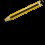
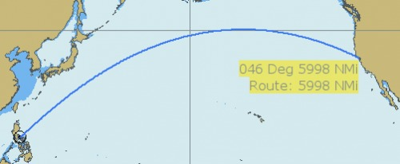
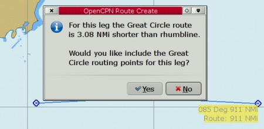
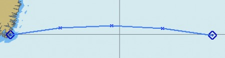
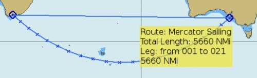
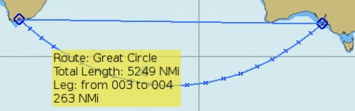
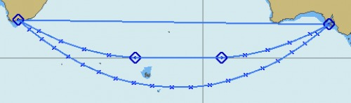
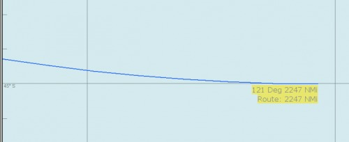
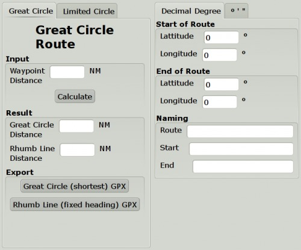
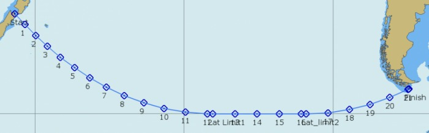

Great Circle Sailing
Very few cruising boats need to use Great Circles, but it's certainly an important consideration for commercial vessels across the North Atlantic and North Pacific.
The advantage of a great circle is obvious, the shorter distance. The disadvantages, depending on latitude, could be quite a few. Colder weather, stronger winds, higher seas and perhaps even icebergs. The great circle is just one factor in the decision making, when planning a route, the weather is likely to be the deciding factor in most cases.
OpenCPN has a builtin Great Circle tool as well as a Great Circle plugin.
The built in Great Circle tool.
The “Measure” tool in the right-click menu and the “Create Route” button on the ToolBar switches seamlessly to a great circle mode when asked to do long distance tasks. This mainly happens when using these tools in some east-west direction and far away from the equator. The mode kicks in when the difference between the normal, rhumb line and the great circle becomes larger than two nautical miles. This will be some 0.2% to 0.5% of the total distance, depending on latitude and direction. When this happens a clear curve towards the pole will appear.
 The Measure Tool

Testing the measure tool for Manila to San Francisco (approximately). For a good illustration to Great circles, find a second point that is opposite the first, on the other side of the globe, and just move around slightly.

Once the first leg in measuring is done, it's plotted as a rhumb-line, to keep things simple. The active leg is still displayed as a great circle, if long enough. The distance displayed is the combined great circle distances.
 The “Create Route” Tool
The “Create Route” Tool

If you answer no to the above question, OpenCPN will use a traditional rhumb line for the leg. Answering yes, will kick the great circle option into action and a number of intermediate waypoints will be created. There will be at least 3 waypoints. The exact number of waypoints is calculated by OpenCPN and is appropriate for most cases.

The created route is now available in the RouteManager dialog, as a normal route.

As a real example let us look at a route from Mossel Baai, South Africa, to the western entrance to Investigator Strait, South Australia. The rhumb line is 5660 nautilcal miles, and the great circle, as approximated by the created route is 5249 miles. The “real” great circle is some 15 miles shorter.

Composite Saling

Composite sailing is a great circle sailing with a maximum allowed latitude. OpenCPN has no such built-in option, but it's easy to create.
Above is the same route as before designed for composite sailing, not going further south than 45° S latitude. Start a route at Mossel Baai extend it until 45° S becomes a tangent to the visible great circle. End the route.

Do the same thing, starting with the destination and going backwards. Create a rhumb line route, using the two points along 45° S. The three routes together form the composite route. The total distance of the composite route is 5293 Nautical Miles.
Route Plugin
“Salty Paws” route plugin handles much more than great circles, introduced here.

The plugin has a few features not present in the built-in tool. It can calculate a composite route, and the distance between the waypoints can be set by the user. The end result, however, is a “gpx” file that is exported, and then imported into OpenCPN via the Route Manager.

A great circle from Cook Strait to Cape Horn limited by 60° S